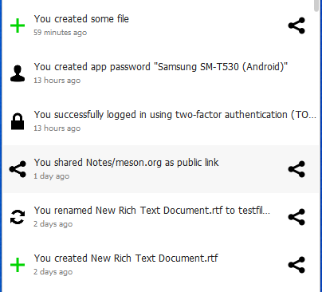
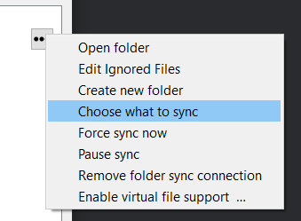
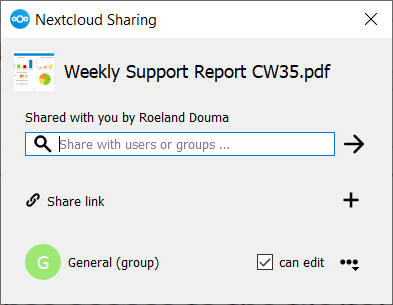
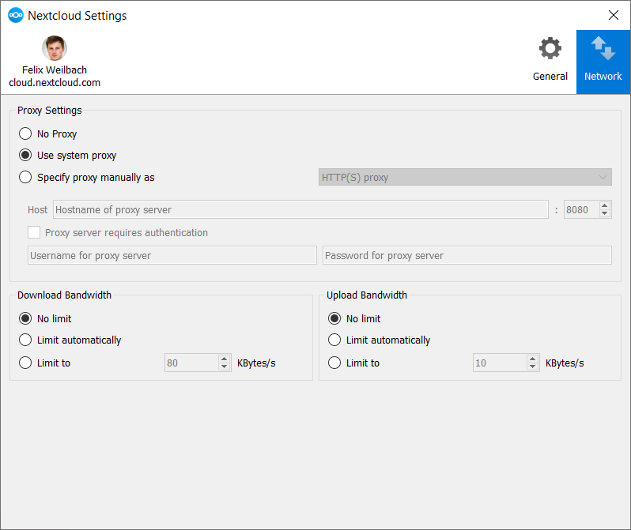

Fonctionnement du client de synchronisation
Le client Nextcloud reste ouvert en arrière-plan ; son icône est visible dans la barre système, le menu macOS ou la zone de notification Linux.
Chaque icône représente un état précis de la synchronisation. Le cercle vert avec coche blanche signifie que tout est synchronisé et que le client est bien connecté au serveur Nextcloud.
L’icône bleue avec demi-cercles blancs indique qu’une synchronisation est en cours.
L’icône grise avec des lignes parallèles vous indique que votre synchronisation a été mise en pause (très probablement par vous-même).
L’icône grise avec trois points blancs signifie que votre synchronisation a perdu sa connexion avec votre serveur Nextcloud.
Quand vous voyez un cercle jaune avec le signe « ! », ce qui est l’icone d’informations, vous pouvez alors cliquer dessus pour voir ce que ça indique.
Le cercle rouge avec le « x » blanc indique une erreur de configuration, comme un identifiant incorrect ou une mauvaise URL de serveur.
Icône de la zone de notification système
Un clic droit sur l’icône de la zone de notification système ouvre un menu pour accéder rapidement à plusieurs opérations.

Ce menu fournit les options suivantes :
Ouvrir la boîte de dialogue principale
Mettre en pause et reprendre la synchronisation
Paramètres
Quitter Nextcloud, ce qui déconnecte et ferme le client
Un clic gauche sur l’icône de la zone de notification système ouvre la boîte de dialogue principale du client de bureau.

Le dialogue principal affiche les activités récentes, les erreurs et les notifications du serveur.
Les Paramètres peuvent être ouverts en cliquant sur la boîte de dialogue principale puis sur l’avatar de l’utilisateur.
Configuration des paramètres du compte Nextcloud

En haut de la fenêtre figurent des onglets pour chacun des comptes de synchronisation configurés, et deux autres qui sont Général et Réseau pour le paramétrage. Sur les onglets de vos comptes, vous disposez des fonctionnalités suivantes :
État de la connexion, montrant à quel serveur Nextcloud vous êtes connecté, et votre nom d’utilisateur Nextcloud.
Espace utilisé et disponible sur le serveur.
État actuel de la synchronisation.
Bouton Ajouter une synchronisation de dossier.
Le bouton bouton avec trois points (le menu déroulant) qui se situe à droite de la barre d’état de synchronisation offre des options supplémentaires :
Ouvrir le dossier
Choisir le contenu à synchroniser (cela n’apparait que si votre arborescence de fichiers est repliée, et développe l’arborescence)
Mettre en pause et reprendre la synchronisation
Supprimer la synchronisation du dossier
Disponibilité (uniquement disponible si la prise en charge des fichiers virtuels est activée)
Activer/désactiver la prise en charge des fichiers virtuels
Ouvrir le dossier ouvre le dossier de synchronisation Nextcloud local.
Mettre en pause suspend les opérations de synchronisation sans faire de changement sur votre compte. Les listes de fichiers et de dossiers continueront à être actualisées, mais sans téléchargement ni téléversement de fichiers. Pour arrêter toute activité de synchronisation, utilisez Supprimer la synchronisation du dossier.

Note
Nextcloud ne préserve pas la date de modification (mtime) des répertoires, bien qu’il actualise celle des fichiers. Voir Date de dossier incorrecte lors de la synchronisation (en anglais) pour une discussion sur ce sujet.
Ajouter de nouveaux comptes
Vous pouvez configurer plusieurs comptes Nextcloud dans votre client de synchronisation. Cliquez simplement sur le bouton Compte > Ajouter nouveau sur n’importe quel onglet de compte pour en ajouter un nouveau, et suivez ensuite l’assistant de création de compte. Le nouveau compte apparaitra dans un nouvel onglet dans la boîte de dialogue des paramètres, où vous pourrez ajuster ses paramètres à tout moment. Utilisez Compte > Supprimer pour supprimer les comptes.
Icônes superposées du gestionnaire de fichiers
En plus des icônes normales des types de fichiers, le client de synchronisation Nextcloud fournit des icônes superposées pour que votre gestionnaire de fichiers système (Explorateur sur Windows, Finder sur Mac et Nautilus sur Linux) puisse indiquer le statut actuel de la synchronisation de vos fichiers Nextcloud.
Les icônes superposées sont similaires à celles de la zone de notification système présentées plus haut. Elles se comportent différemment sur les fichiers et les répertoires en fonction de l’état et des erreurs de synchronisation.
L’icône superposée sur un fichier individuel indique son état actuel de synchronisation. Si le fichier correspond à sa version sur le serveur, elle affiche une coche verte.
Si la synchronisation du fichier est ignorée, par exemple parce qu’il figure dans la liste d’exclusion, ou parce qu’il s’agit d’un lien symbolique, il affichera une icône d’avertissement.
En cas d’erreur de synchronisation, ou si le fichier est sur liste noire, l’icône affiche un X rouge pour attirer l’attention.
Si le fichier est en attente de synchronisation, ou s’il est en cours de synchronisation, l’icône superposée affiche un cercle bleu en rotation.
Quand le client est hors-ligne, aucune icône n’est affichée afin de signaler que le dossier ne se synchronise plus et qu’aucune modification n’est envoyée vers le serveur.
L’icône superposée d’un répertoire synchronisé indique l’état des fichiers contenus dans ce répertoire. En cas d’erreur de synchronisation, le répertoire est marqué avec une icône d’avertissement.
Si un répertoire contient des fichiers ignorés qui sont marqués avec des icônes d’avertissement, cela ne change pas le statut des répertoires parents.
Définir le statut de l’utilisateur
Si vous avez l’application de statut utilisateur installée sur votre serveur Nextcloud, vous pouvez définir celui-ci à partir du client de bureau. Pour cela, ouvrez la boîte de dialogue principale. Cliquez ensuite sur votre avatar puis sur les trois points. Dans le menu qui s’ouvre, cliquez sur Définir le statut.

Dans la boîte de dialogue qui s’ouvre, vous pouvez définir votre statut en ligne si vous cliquez sur En ligne, Absent, Ne pas déranger ou Invisible. Vous pouvez également définir un message de statut personnalisé avec le champ texte au-dessous ou choisir un des messages de statut prédéfinis plus bas. Il est aussi possible de définir un emoji personnalisé en cliquant sur le bouton avec un emoji à côté du champ de saisie de texte. La dernière chose qu’il est possible de faire est d’effacer votre statut utilisateur. Vous pouvez choisir après combien de temps le statut utilisateur sera effacé en cliquant sur le bouton situé à droite du texte Effacer le message de statut après.

Si le statut que vous avez créé vous convient, vous pouvez l’activer avec le bouton Définir le message de statut. Si un statut a déjà été défini, vous pouvez l’effacer en cliquant sur le bouton Effacer le message de statut.
Partage depuis votre bureau
Le client de bureau de synchronisation Nextcloud s’intègre à votre gestionnaire de fichiers. Finder sur macOS et Explorateur sur Windows. Les utilisateurs de Linux doivent installer un paquet supplémentaire en fonction du gestionnaire de fichiers utilisé. Ceux disponibles sont par exemple nautilus-nextcloud (Ubuntu/Debian), dolphin-nextcloud (Kubuntu), nemo-nextcloud et caja-nextcloud. Vous pouvez créer des liens de partage et faire des partages avec des utilisateurs internes de Nextcloud de la même manière que dans votre interface Web Nextcloud.
In your file explorer, click on a file and in the context menu go to Nextcloud and then click on Share options to bring up the Share dialog.

Vous pouvez partager un fichier depuis cette boîte de dialogue.

Fenêtre Général
La fenêtre Général possède des options de configuration telles que Lancer au démarrage du système, Utiliser les icônes monochromes et Afficher les notifications serveur. C’est là que vous trouverez le bouton Modifier les fichiers ignorés pour lancer l’éditeur des fichiers ignorés ainsi que Demander une confirmation avant de synchroniser les dossiers de plus de [taille du dossier].

Utilisation de la fenêtre Réseau
La fenêtre des paramètres du Réseau vous permet de définir le paramétrage du serveur proxy ainsi que de limiter la bande passante en envoi et réception.

Utilisation de l’éditeur de fichiers ignorés
Il peut y avoir certains fichiers ou répertoires locaux que vous ne voulez pas sauvegarder ni stocker sur le serveur. Pour identifier et exclure ces fichiers et répertoires, vous pouvez utiliser l”Éditeur de fichiers ignorés (onglet Général).

Pour votre confort, l’éditeur est prérempli avec une liste de modèles d’exclusion typique. Ces modèles sont contenus dans un fichier système (généralement sync-exclude.lst) situé dans le répertoire de l’application Client Nextcloud. Vous ne pouvez pas modifier ces modèles préremplis directement depuis l’éditeur. Cependant, si besoin, vous pouvez survoler un modèle de la liste pour afficher le chemin et le nom de fichier associé à ce modèle, localiser le fichier et éditer le fichier sync-exclude.lst.
Note
La modification du fichier global des définitions d’exclusions peut rendre le client inutilisable ou provoquer un comportement non désiré.
Chaque ligne dans l’éditeur contient un modèle de chaîne à ignorer. Lors de la création de modèles personnalisés, en plus de pouvoir utiliser des caractères normaux pour définir un modèle d’exclusion, vous pouvez utiliser des caractères génériques pour remplacer des valeurs. Par exemple, vous pouvez utiliser un astérisque (*) qui correspondra à un nombre quelconque de caractères, ou un point d’interrogation (?) pour correspondre à un caractère unique.
Les modèles qui finissent par un caractère de barre oblique (/) sont appliqués uniquement aux composants de répertoires des chemins en cours de vérification.
Note
Actuellement, les entrées personnalisées ne font pas l’objet d’une correction syntaxique de la part de l’éditeur, vous ne verrez donc aucun avertissement en cas de syntaxe incorrecte. Si votre synchronisation ne fonctionne pas comme prévu, vérifiez votre syntaxe.
Chaque chaîne de modèle de la liste est suivie par une case à cocher. Quand cette case est cochée, en plus de l’exclusion du fichier ou du composant de répertoire qui correspond au modèle, tous les fichiers qui correspondent sont considérés comme des « métadonnées éphémères » et sont supprimés par le client.
En plus d’exclure les fichiers et répertoires qui utilisent les modèles définis dans cette liste :
Le client Nextcloud exclut toujours les fichiers qui contiennent des caractères qui ne peuvent pas être synchronisés vers d’autres systèmes de fichiers.
Des fichiers sont supprimés, ce qui provoque des erreurs individuelles trois fois au cours d’une synchronisation. Cependant, le client offre une option pour retenter une synchronisation trois fois supplémentaires sur les fichiers qui produisent des erreurs.